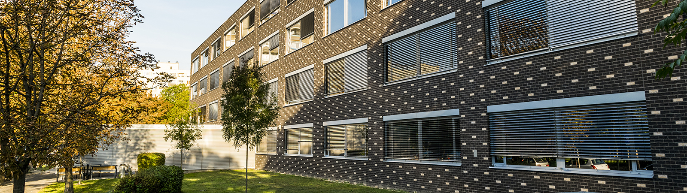

Rólam
A SZÁMALK-Szalézi tanulója vagyok, Szoftverfejlesztő és tesztelő szakon. Ezen az oldalon mutatom be a munkáimat és eredményeimet.
Gimnáziumban is informatikus szakon tanultam, 2020-ban érettségiztem ott. Ezután kezdtem a Számalkban, ahol szeretném megtanulni a program és weblap fejlesztést.
